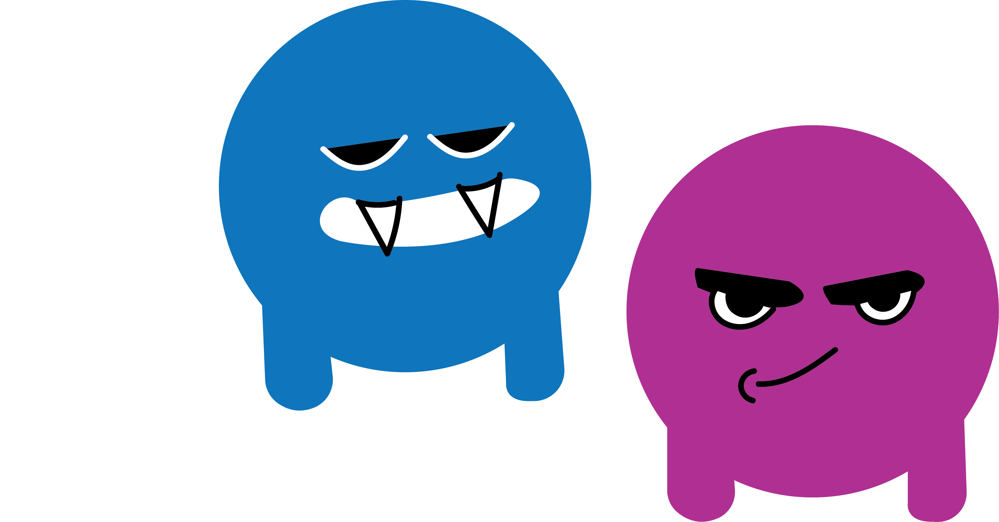
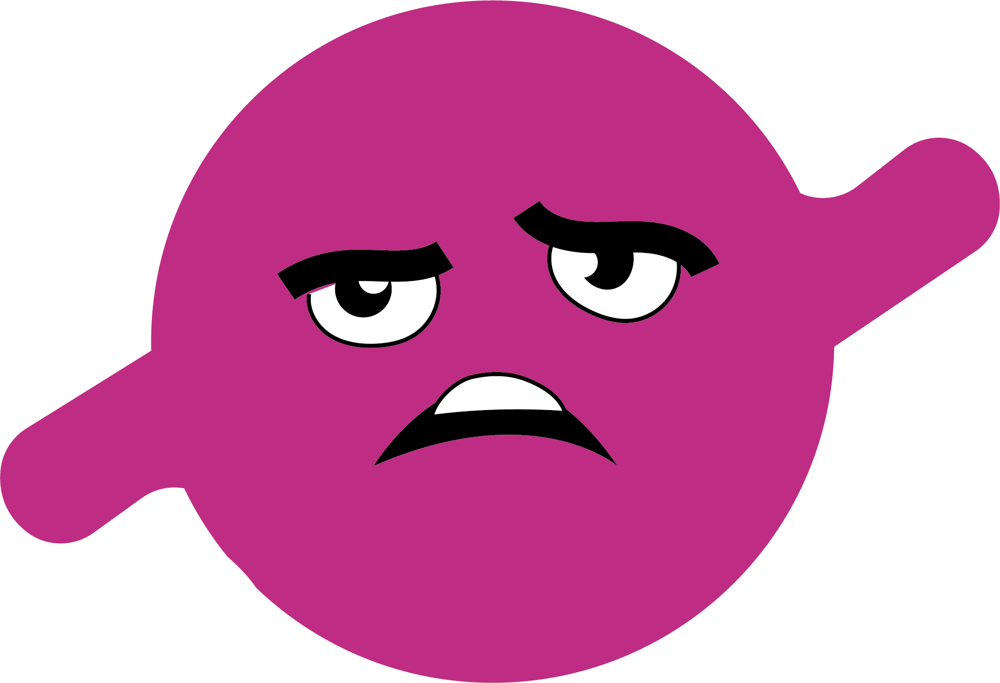
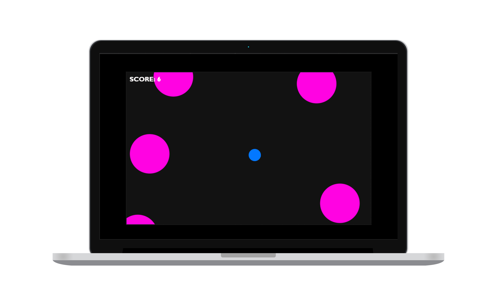

WHAT ARE CIRCLE GAMES ?
Circle Games are an exciting selection of puzzle, response, and collaborative Interactive games that can be played online for free. These games are ideal for individuals who think in a circular rather than predictable sequence. The games feature catching circles, moving in circular patterns to achieve goals, or expanding as a circle.
Simply roll around as a circle on the two games created, crushing your opponents by using keys and collecting larger circles to beat the score. Browse through my cool collection of Circle Games that I designed, pick your personal best, and have a great time. When you're done, just start over since a circle has no endpoint. Isn't that amazing? Have fun with my two fantastic games, Circle Rush and Crazy Circles.

HELLO, I'M CRAZY CIRCLE 1
Hi,
I'm a game made out of circles, born in 2023
and I'm interested in destroying the enemy.
To create this game, I used 100% HTML, JS & CSS.
I made this game keeping in mind simple elements and shapes,
Through this I learnt basics of Java Script and html and even
learnt how to add sound effects for capturing enemy circles.
You will further learn how to make this game and also how to
play the game using just a mouse!

INSTRUCTIONS FOR THE GAME
CLICK TO PLAY
CRAZYY CIRCLES
GOAL: Player BLUE is trying to capture the PINK enemy circles.
HOW: Use left-click on your mouse to capture Pink enemy circles.
WHAT YOU NEED: A mouse and some motivation!
AGES: 5+
That's it! Have fun, destroying the enemy.
CLICK TO LEARN GAME
ADDED BONUS GAME
INSTRUCTIONS FOR THE GAME
RUSH CIRCLES
GOAL: Player BLUE is trying to dodge the RED enemy circles.
HOW: Use left and right key on your keypad to dodge the RED enemy circles.
WHAT YOU NEED: 2 keys and some motivation!
AGES: 7+
That's it! Have fun, Save yourself from the enemy.
CLICK TO PLAY RUSH CIRCLES